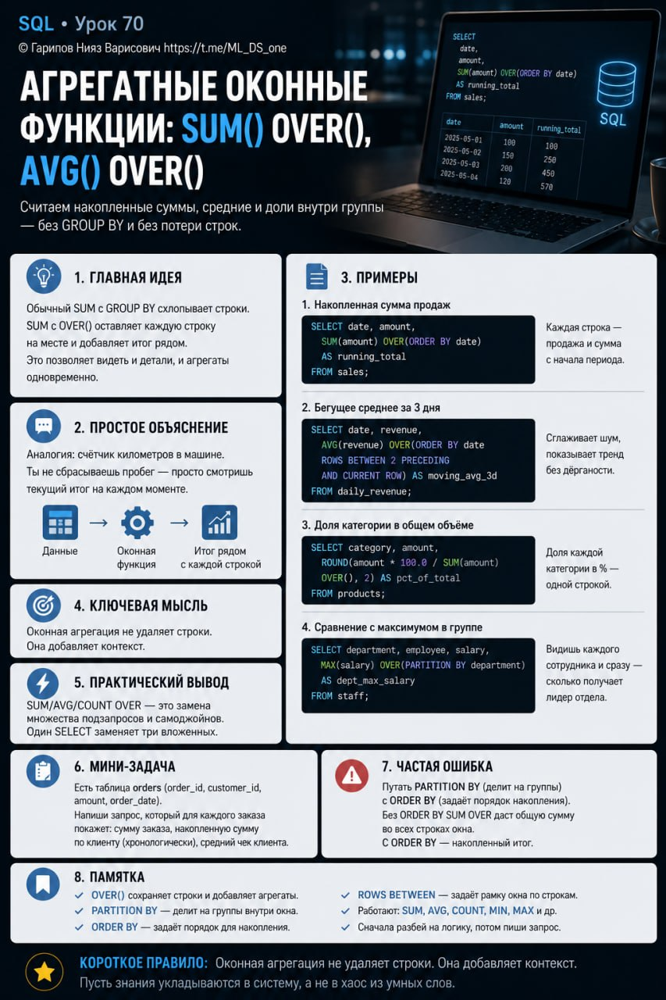

Тема 70. Агрегатные оконные функции: SUM() OVER(), AVG() OVER()¶
Номер: 70

Тема 70. Агрегатные оконные функции: SUM() OVER(), AVG() OVER()
Ты уже умеешь нумеровать строки в окне. Теперь самое мощное: считать накопленные суммы, бегущие средние и доли внутри группы — без GROUP BY и без потери строк.
Главная мысль Обычный SUM с GROUP BY схлопывает строки. SUM с OVER() оставляет каждую строку на месте и добавляет итог рядом. Это даёт возможность в одном запросе видеть и детали, и агрегаты одновременно.
Примеры
- Накопленная сумма продаж
SELECT date, amount, SUM(amount) OVER(ORDER BY date) AS running_total FROM sales;
Каждая строка показывает продажу + сколько продано с начала периода.
- Бегущее среднее за 3 дня
SELECT date, revenue, AVG(revenue) OVER(ORDER BY date ROWS BETWEEN 2 PRECEDING AND CURRENT ROW) AS moving_avg_3d FROM daily_revenue;
Сглаживает шум, показывает тренд без дёрганости по дням.
- Доля категории в общем объёме
SELECT category, amount, ROUND(amount * 100.0 / SUM(amount) OVER(), 2) AS pct_of_total FROM products;
Доля каждой категории в процентах — одной строкой, без подзапросов.
- Сравнение с максимумом в группе
SELECT department, employee, salary, MAX(salary) OVER(PARTITION BY department) AS dept_max_salary FROM staff;
Видишь каждого сотрудника и сразу — сколько получает лидер отдела.
Практический вывод SUM/AVG/COUNT OVER — это замена множеству подзапросов и самоджойнов. С ними один SELECT заменяет три вложенных.
Мини-задание Есть таблица orders (order_id, customer_id, amount, order_date). Напиши запрос, который для каждого заказа покажет: сумму заказа, накопленную сумму по клиенту (хронологически), средний чек клиента.
Частая ошибка Путать PARTITION BY (делит на группы) с ORDER BY (задаёт порядок накопления). Без ORDER BY SUM OVER даст общую сумму во всех строках окна. С ORDER BY — накопленный итог.
Короткое правило Оконная агрегация не удаляет строки. Она добавляет контекст.
Пусть знания укладываются в систему, а не в хаос из умных слов.